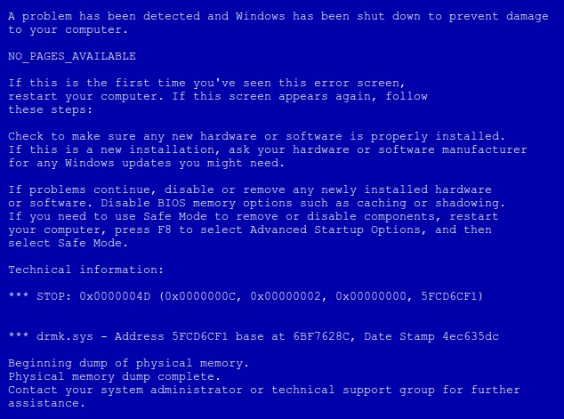
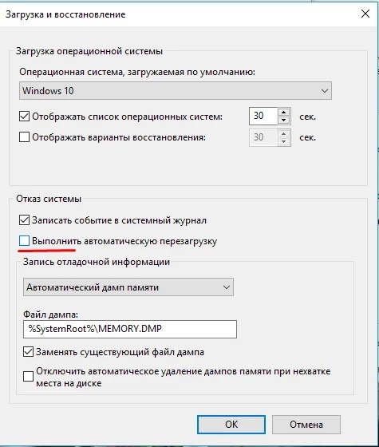
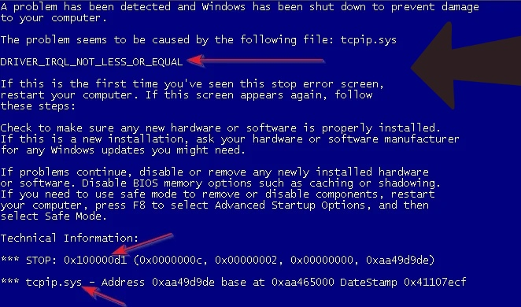
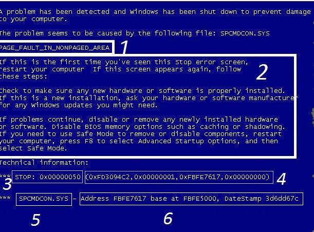
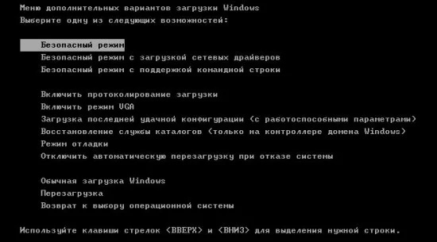
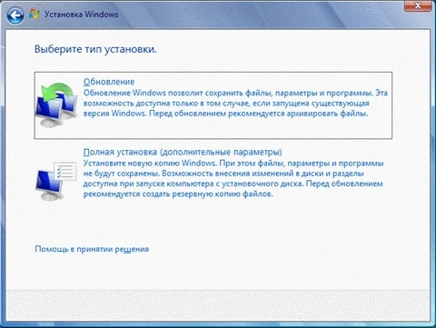

Описание ошибки «синего экрана смерти» и варианты ее исправления
Понятно, что синий экран является следствием ошибки операционной системы windows 7 и таким способом она пытается донести информацию о поломке до пользователя.Из-за синего экрана пользоваться компьютером становится невозможно, но при правильных действиях работоспособность системы вы сможете восстановить.
Синий экран не случайно блокирует работу устройства, это делается с определенной целью: помочь пользователю спасти файлы и все данные в компьютере.
В наиболее простых случаях поможет обычная перезагрузка компьютера.
Это относится к случаям, когда ошибка была вызвана некорректной обработкой данных и сбоем при передаче информации.
Если же перезагрузка не помогла, значит причина может быть в сломанных драйверах, жестком диске или модуле.

Так выглядит синий экран "смерти"
Понять, что именно произошло, помогут коды, которые отражают номер и название поломки.
Коды — это две первые строки на экране монитора.
Иногда компьютер вовсе не выводит синий экран, а просто произвольно перезагружается.
В таком случае определить причину поломки сложнее.
А произойти это может из-за отключения функции вывода на экран сообщений BSoD.
Чтобы исправить это (если ваш компьютер все же работает после перезагрузки), отключите произвольную перезагрузку системы.
В выбранном окне нажать на «Дополнительные настройки».
Здесь вы увидите блок восстановления и загрузки системы, в нем нужно убрать галочку напротив пункта «Выполнить автоматическую перезагрузку».

Меню «свойства», показано, в каком поле убрать галочку. После этого система всегда будет выдавать вам экран с записью об ошибке и определить причину поломки будет проще.
Очень часто пользователей интересует как исправить системные ошибки Windows, которые представляют собой синий экран с написанным кодом.
Обычному пользователю такой экран совершенно непонятен, более того, он пугает и настораживает, так как в большинстве случаев, при появлении синего экрана «смерти», компьютер не может работать.
Если система не загружается, а вместо окна загрузки вы видите синий экран с белым кодом, значит вы столкнулись со стоп-ошибкой Windows, которую именуют экраном смерти.
Но не стоит беспокоиться, очень часто даже такая ошибка не является достаточной причиной для переустановки операционной системы или удаления всех данных с компьютера.
Чтобы спасти систему от переустановки, нужно понять, а чем причина ошибки.
Проще всего это сделать, посмотрев на код сбоя, он указан после слова STOP на странице.
По этому коду вы поймете, в чем причина сбоя и сможете быстро и безопасно его ликвидировать.

В данном случае причиной ошибки является драйвер, который не смог правильно взаимодействовать с модулями операционной системы.Об этом свидетельствует фраза DRIVER_IRQL_NOT_LESS_OR_EQUAL вверху экрана.
В следующих строках указаны стоп слова, которые возникли из-за ошибки, но они несут для нас мало информации.
В нижней строке написано имя драйвера, то есть в нашей ситуации это tcpip.sys, имя интернет-протокола TCP/IP.
Чтобы исправить системную ошибку, не обязательно ставить новую операционную систему.
Достаточно поменять драйвер сетевой платы компьютера на более подходящий.
Выполните следующий порядок действий, чтобы исправить ошибку:
1. Перезагрузите компьютер. Иногда это помогает, так как часто возникают временные сбои. Если появится доступ к Виндоус, то именно с временной проблемой мы и столкнулись и после перезагрузки система начнет работать нормально.
2. Если после перезагрузки синий экран пропал, но в следующий раз появился снова, значит проблема с драйвером, который не соответствует системе. Возможно драйвер обновился и теперь несовместим с системой. В этом случае нужно сделать откат драйвера до предыдущей версии, если ошибка появилась после обновления. Если обновлений не было, а синий экран время от времени появляется при запуске системы, значит драйвера устарели и нуждаются в обновлении. Небольшой совет: проверяйте системные сообщения Windows на предмет обновлений. Не все обновления устанавливаются автоматически, поэтому следует обращать внимание на сообщения в центре поддержки и устанавливать все предложенные обновления. Это поможет также улучшить защиту компьютера от вирусов.
3. Наиболее серьезный случай, когда синий экран появляется при каждом запуске системы. В такой ситуации вам потребуется загрузочный диск или флешка, восстанавливающие компоненты ОС. Найти подробные инструкции можно в интернете, процесс установки компонентов будет зависеть от типа и кода ошибки. Но в большинстве случаев причиной появления синего экрана смерти является сбой загрузки файловой системы. В такой ситуации нужно загрузить систему с загрузочного диска Windows PE и запустить командную строку. Открыть командную строку можно через Пуск. Войдите в меню «Пуск», нажмите на «Выполнить» и «Команда CMD». В открывшейся строке вбиваем chkdsk C: /f и нажимаем на enter. Эта команда сканирует весь диск С на наличие ошибок, и когда находит автоматически их исправляет. После окончания процесса исправления ошибок, вы можете запускать компьютер в нормальном режиме.
Сканирование диска не всегда может спасти компьютер, но очень часто помогает восстановить нормальные параметры системы.
В любом случае провести его нужно, так как такая процедура точно не усугубит проблему и не навредит системе, но может помочь избавиться от ошибок. 
В поле, отмеченном на скриншоте цифрой 1, указано название ошибки.
Если вы умеете справляться с компьютером и знакомы с основами программирования, то исходя из названия уже сможете найти способы решения.
Если же нет, то сможете ввести код в интернет и найти необходимую информацию по ошибке.
Во втором поле, оно более объемное, содержится подробное описание ошибок и предложены способы их решения.
Действуя по инструкции на экране, вы сможете «вылечить» компьютер без переустановки системы.
Зона номер три содержит информацию с кодом ошибки.
Обычному пользователю код будет малополезен, а вот системный администратор с его помощью сможет быстро исправить поломку.
Пользователь лишь может вводить этот код вместе с названием неисправности в строку браузера, чтобы найти достаточное количество информации.
Четвертое поле содержит информацию о параметрах и характеристиках поломки.
Пятое поле — это название драйвера, при включении которого и возникла неисправность.
Внизу экрана, в шестом поле, найдете информацию о специальном адресе ошибки.
При наличии определенных навыков и знаний, используя информацию на экране можно легко исправить любые ошибки самостоятельно и быстро.
Чтобы решить проблему перепишите название и код с экрана и найдите информацию о поломки в сети.
Если знаете английский — выполните действия, которые предлагает система.
В любом случае, даже если перезагрузка не помогает и ошибка, вызвавшая синий экран смерти является фатальной, не всегда приходится переустанавливать операционную систему.
Очень часто достаточно переустановить драйвер, который прописан в поле 5 на скриншоте, так как именно он вызвал ошибку.
Все причины появления экрана смерти можно разделить на 2 категории: к первой категории относятся поломки, которые возникли после установки программного обеспечения или драйверов.
Вторая категория — это поломки аппаратной части или сбой в работе операционной системы.
К первой группе причин отнесем установку новых, несовместимых с системой драйверов, подключение нового оборудования: установка видеокарты, смена жесткого диска и другое.
Также ошибку может вызвать переустановка Windows, обновление Windows или обновление драйверов.
Ко второй категории относят такие причины как поломка цифровых элементов техники, электронно-вычислительных комплектующих, нарушение соответствия между драйвером и модулем, а также неправильный контакт узлов в процессоре.
Ошибка может возникнуть и из-за сброса процессором частоты и напряжения.
Это возникает из-за перегрева самого процессора и приводит к невозможности работы устройства.
В числе других поломок аппаратной части, которые могут вызвать синий экран смерти, следующие:
Работа взаимоисключающих программ. Самый яркий пример — работа двух антивирусников, которые блокируют друг друга.
Нет памяти на винчестере.
Неправильная работа BIOS.
Разгон процессора, видеокарты или оперативной памяти, который также был выполнен неправильно.
Опасные вирусы в системе.
Кстати, вызвать экран BSOD можно самостоятельно, чтобы проверить состояние компьютера и выявить проблемы своевременно.
Чтобы вызывать этот экран нужно совершить двойное нажатие SCROLL LOSK при зажатии CTRL при включенной опции.
1. Код ошибки: 0x00000001: APC_INDEX_MISMATCH. Это внутренний сбой одного из ядер. Может возникнуть из-за несоответствия KeEnterCricticalRegion и KeLeaveCriticalRegion в системе файлов. Также причиной ее появление становится слишком большое число повторных вызовов системы. Это одна из наиболее распространенных проблем.
2. Ошибка 0x0000000A: IRQL_NOT_LESS_OR_EQUAL. Означает, что пользователь (или система), пыталась затронуть внутреннюю память на процессоре, из-за чего система и сбилась. Обычно возникает в том случае, если драйвер устройства использует неправильный адрес. Параметрами ошибки является адрес обращения драйвера, тип операции — операция чтения осуществлялась системой, или операция записи, а также адрес инструкции, которая обнаружила неправильный адрес драйвера. В 9 случаях из 10 возникает из-за установки нелицензионных драйверов Виндоус.
3. 0x00000005: INVALID_PROCESS_ATTACH_ATTEMPT — ошибка свидетельствует об отсутствии доступа к серверу и невозможности запуска операционной системы.
4. 0x0000000D: MUTEX_LEVEL_NUMBER_VIOLATION. Ошибка показывает, что точки взаимодействия получают доступ к системе вне правильной очереди. Найти, какие точки взаимодействия стали причиной сбоя можно с помощью файла заголовков NTOSEXEXLEVELS.H.
5. Очень распространенная ошибка — 0x00000012: TRAP_CAUSE_UNKNOWN. Она показывает, что в системе произошел сбой, но причина не определена. Чтобы выяснить причину и исправить работу компьютера, необходимо отследить, при каких условиях возникла данная ошибка.
6. 0x0000001E: KMODE_EXCEPTION_NOT_HANDLED, также распространенная ошибка. В этом случае обычно появление стоп-экрана вызвано поломанным или исключенным драйвером. Нужно обращать внимание и на тип самого драйвера, и на путь доступа к нему. Эта ошибка не несет особой опасности устройству если она не повторяется слишком часто. В противном случае необходимо будет провести диагностику системы. Иногда причиной ошибки является кэширование процессора и если она возникла повторно, необходимо связаться с производителями этой детали и получить консультацию у них.
7. 0x00000023: FAT_FILE_SYSTEM — указывает на повреждение файловой системы FAT16 или FAT32. Проблема может быть в нарушении работы диска, или с Interrupt Request Packet пакетом.
8. 0x00000020: KERNEL_APC_PENDING_DURING_EXIT. Возникает при повреждении или отключении АРС счетчика. Диагностировать причину легко: если АРС счетчик показывает значение выше 0, то причина именно в нем. Причиной сбоя в работе счетчика может быть неправильная настройка драйверов, которая вызвала неравное количество перезапусков файловых систем.
9. 0x00000024: NTFS_FILE_SYSTEM — ошибка указывает на проблему с чтением определенного драйвера, чтения или записи. Также причиной может служить неправильная работа программного обеспечения, чрезмерная активность антивируса или перегрузка дисков.
10. Ошибка 0x0000002A: INCONSISTENT_IRP указывает на несоответствие состояний IRP. Иногда IRP, который уже выполнил загрузку, система принимает как ожидающий загрузки и наоборот. Из-за этого появляется синий экран.
11. 0x0000002B: PANIC_STACK_SWITCH — ошибка показывает, что область стека ядра переполнена. Обычно причиной является либо ошибка в ядре, либо большой вес драйвера.
12. 0x0000002E: DATA_BUS_ERROR — ошибка памяти системы, возникает когда драйвер обращается к источнику памяти, который уже не существует.
13. 0x00000031: PHASE0_INITIALIZATION_FAILED — появляется в случае, когда система не прошла инициализацию на ранней стадии. Информации этот код практически не дает, поэтому требуется дополнительная диагностика системы.
14. Ошибка с кодом 0x00000025: NPFS_FILE_SYSTEM свидетельствует о том, что память компьютера переполнена и устройство не может нормально работать. В этом случае необходимо увеличить память на жестком диске.
15. Еще один часто встречающийся вариант: 0x00000026: CDFS_FILE_SYSTEM. Показывает, что повреждена файловая система компьютера, есть битые сектора или новый драйвер не совместим с системой. Чтобы исправить ошибку, нужно провести диагностику устройства, ликвидировать битые сектора и добавить объем оперативной памяти.
Так как самая распространенная причина появления синего экрана удаление нужных системных файлов или ПО, то нужно уметь пользоваться функцией «Восстановление системы».
Эта функция вернет компьютер в состояние, в котором он находился до удаления нужного файла.
Чтобы выполнить восстановление системы, необходимо:
Перейти в меню «Пуск» и набрать в строке поиска «восстановление системы».
Открыть файл двойным нажатием мыши.
Установить точку даты восстановления, то есть время до удаления нужного файла или установки неподходящего драйвера. Именно к этому времени будет восстановлен Windows.
Подождите пока процесс завершится и перезагрузите компьютер, синий экран должен пропасть.
Если же вы не удаляли никаких файлов в последнее время и не устанавливали нового оборудования, вам необходимо прочесть на экране смерти, какая программа вызывает такую ошибку. Понять это можно из кода вверху страницы.
Теперь, зная имя файла, отыщите его через «Панель управления», и нажмите на «Удаление программы».
Совет! Загружать программы, файлы и драйвера лучше только с проверенных, лицензионных сайтов, чтобы избежать таких поломок.
В крайнем случае вы можете переустановить систему полностью, так как в процессе переустановки зайдествован обычно только программный диск, то данные на остальных сохранятся.
Для установки новой Windows нужно иметь загрузочный носитель с официальной версией этой операционной системы.
Итак, когда на мониторе синий экран с кодом, нужно запустить загрузку компьютера в безопасном режиме. Для этого нажимайте клавишу F8 до тех пор, пока не появится меню загрузки. Выглядит оно вот так:
На этом экране выбираем, используя стрелочки на клавиатуре, пункт «Безопасный режим с загрузкой сетевых драйверов».
Этот режим предоставляет ограниченный доступ к функциям компьютера, но в нем вы можете воспользоваться интернетом и найти инструкции по избавлению от ошибки или другую нужную информацию.
Здесь же, в безопасном режиме, запустите полное сканирование антивирусом.
Эта программа в фоновом режиме работает постоянно, но иногда и она пропускает «червей» и более опасные вирусные угрозы.
В любом антивируснике функция глубокой проверки предусмотрена, можно воспользоваться ее, или запросить сканирование при загрузке операционной системы и перезагрузить компьютер.
Теперь, если вирусов нет, или программа смогла их обезвредить, нужно обновить Windows 7.
Разработчики Windows постоянно присылают обновления, которые делают использование программы более удобным и расширяют ее функции, но не всегда пользователь их замечает и устанавливает.
И из-за этого также часто возникают системные ошибки разного рода, поэтому все обновления Windows нужно устанавливать: проверять системные сообщения или настроить автоматическую загрузку обновлений.
Но если синий экран уже появился, обычная установка обновлений не поможет решить проблему.
Для этого нужно выполнить обновление всей системы, это альтернатива переустановки программного обеспечения.
Для этого вам нужен загрузочный диск с Windows 7 (или загрузочная флешка), gри этом программа удалит старые файлы и файлы, вызывающие ошибку, и заменит их новыми. 
Вам удалось избавиться от такой ошибки, но не хотелось бы ее повторения. Для этого соблюдайте простые правила: Проводите глубокое сканирование системы хотя бы раз в 2-3 месяца. Устанавливайте обновления Windows и читайте системные сообщения. Чистите системный блок от пыли, а клавиатуру от крошек. Проверяйте работу вентилятора. Своевременно меняйте термопасту.
Самый опасный и сложный тип ошибок появляется вовсе не на синем, а на черном экране. Это ошибки запуска системы. Обычно они появляются в случае, когда произошел серьезный сбой и исправить ситуацию вряд ли удастся — единственным выходом становится перезагрузка системы. ка запуска с текстом press and key to start, возникающая при загрузке операционной системы может изрядно напугать, но на самом деле она требует лишь нажать любую кнопку для продолжения. Это распространенный сбой запуска и появляется он как раз-таки на черном экране, но никакой опасности не несет. Но есть и более весомые причины, которые не дают Виндоус нормально загружаться. К ним относят ошибки в реестре, повреждения системных файлов и жесткого диска. Если речь идет о повреждении системных файлов, то страдают обычно hal, dll, ntdetect и ntldr. В таком случае на черном экране вы увидите надпись «windows could not start because the following file is missing or corrupt». Далее указан потерянный файл, то есть вся информация есть на экране. При такой ошибке помочь можно переустановкой операционной системы, если у вас есть резервная копия записанная заранее, или просто загрузочный диск.Вы включили компьютер, появилось окно загрузки, но система не может начать работать полноценно. Она либо перезагружается, либо зависает, либо выдает непонятные символы и всплывающие окна. В такой ситуации вам также понадобится функция восстановления системы, но провести ее указанными выше способами не получится, так как устройство не загружается. Чтобы исправить такую ошибку, вам нужен установочный диск или флешка с выбранной версией операционной системы. Порядок действий такой: Флешку подключают к компьютеру и перезагружают устройство. Когда появится окно перезагрузки, нажмите одну из клавиш, которая переведет вас в bios. Это F2—F12 и delete, в зависимости от модели. Обычно помогает кнопка delete или F8. В системе bios нужно выставить по умолчанию загрузку с CD/DVD-диска или USB-устройства, в зависимости от типа носителя, на котором у вас записан Виндовс. Перезагрузите компьютер.
Теперь выбирайте язык установки и нажимайте «Далее». Вы увидите такое окно, окно установки операционной системы: Нажимаем на «Восстановление системы» Очень важно! Установочный диск с версией Виндоус должен соответствовать вашей старой версии, в противном случае восстановление системы невозможно. На экране вы увидите все установленные системы, выбираем Windows 7 и ставим галочку напротив названия, нажимаем «Далее». Система автоматически просканирует компьютер на предмет неисправностей и попытается ликвидировать ошибки. Затем она сделает откат ОС к точке восстановления. Нужно отметить, что этот способ не всегда является эффективным, и если он не помог — искать проблему нужно по коду или аппаратной диагностике.
Основные ошибки связаны с синим экраном